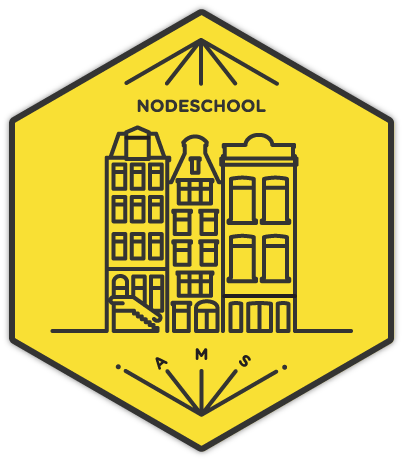

<div class="main">
	<section>
		<div class="section typeset aside">
			<div class="single-measure centered">
				
			</div>
		</div>
		<div class="section typeset">
			<div class="single-measure">
				<h1>Beer.js</h1>
				<h4>Friday September 16th at <a class="link" href="hoppydays.nl">Hoppy Days!</a></h4>
			</div>
		</div>

		<div class="yellow-bar">
			<div class="section typeset">
				<div class="single-measure">
					<h4>How about some drinks?</h4>
					<br>
					<p>
						NodeSchool Amsterdam is happy to invite Node.js Interactive Europe attendees to join us for drinks
						at <a href="hoppydays.nl">Hoppy Days</a>!
					</p>
					<p>
						Start: 1830 hrs, 
						Location: Koggestraat 1a, 1012 TA Amsterdam
					</p>
				</div>
			</div>
		</div>
		<div class="section typeset">
			<div class="single-measure">
				<p>
					Hoppy Days is about 7 minutes walking away from De Beurs van Berlage.
				</p>
				<iframe src="https://www.google.com/maps/embed?pb=!1m28!1m12!1m3!1d2435.678218119528!2d4.893884887955651!3d52.376254493775264!2m3!1f0!2f0!3f0!3m2!1i1024!2i768!4f13.1!4m13!3e6!4m5!1s0x47c609c787f17ca7%3A0xfdc6eede688a772f!2sBeurs+van+Berlage%2C+Damrak%2C+Amsterdam!3m2!1d52.375174699999995!2d4.8960158!4m5!1s0x47c609c87892e211%3A0x84c5eabbd614b229!2shoppy+days!3m2!1d52.3774624!2d4.893612399999999!5e0!3m2!1sen!2snl!4v1473854929841" width="100%" height="450" frameborder="0" style="border:0" allowfullscreen></iframe>
			</div>
		</div>


		{% include footer.html %}
	</section>
</div>
